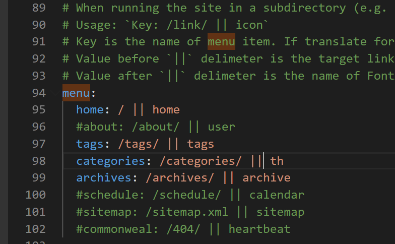

下载Next主题
在博客根目录下打开Git并输入以下命令：git clone https://github.com/iissnan/hexo-theme-next themes/next
增加标签页和分类页
修改next文件中的_config.yml文件，在menu字段中启用tags和categories 

打开标签页与分类页
- 在blog文件下打开Git输入命令：
hexo n page tags/categories - 修改各自的index.md文件：加入字段“type”，设置为tags/categories
- 注意：如果出现访问失败，并且url里面莫名多了一个%20，则将空格都删掉即可
主题样式的更改
在next文件夹下修改_config.yml文件中的Schemes字段即可
更换头像
在next文件夹下修改_config.yml文件中的avatar字段即可
启用社交账号链接
在next文件夹下修改_config.yml文件中的social字段即可
启用友情链接
在next文件夹下修改_config.yml文件中的links字段即可